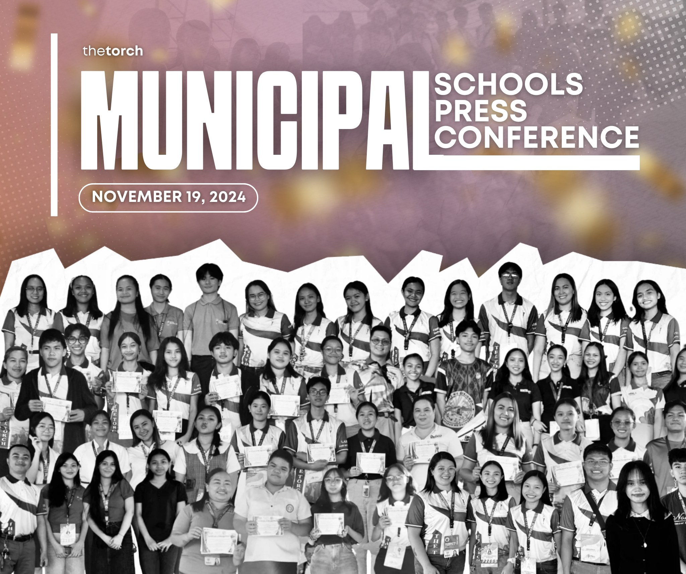
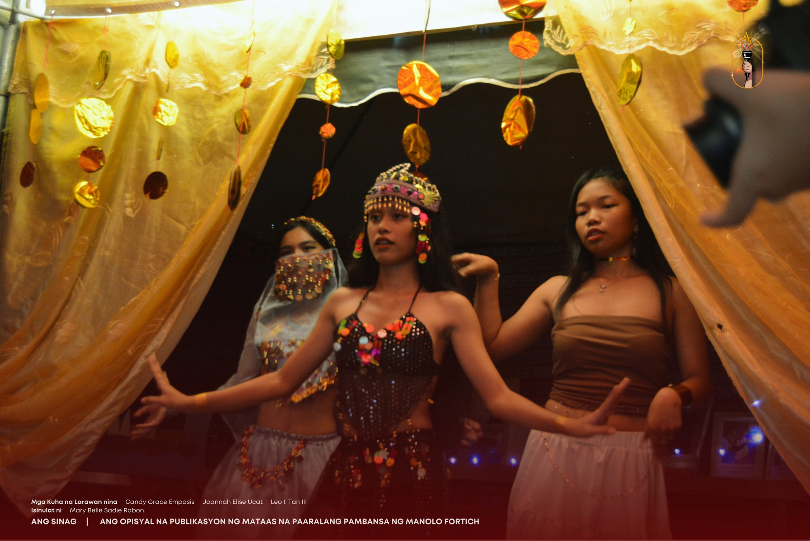

RESUME OF CLASSES JANUARY 2,2025
How we wish it is extended to 6… But yes, tomorrow January 2, 2025 classes resumes as stipulated in our DepEd Calendar! Happy New Uear spotless jewels! ✨

HAPPY NEW YEAR! WELCOME YEAR 2025!
Happy New Year to the spotless jewels! 💎✨ As we step into this bright new year, we are reminded of the core values that guide our journey: Scholarship, Leadership, and Character. These pillars stand strong in everything we do, shaping our students into individuals who not only excel academically but also inspire others with their leadership and lead lives rooted in integrity and respect. May 2025 be a year of growth and achievement for all. Together, let’s continue to strive for excellence, embrace challenges with resilience, and uplift each other through kindness and respect. Here’s to a year filled with learning, growth, and success! Wishing you all a prosperous, fulfilling, and inspiring 2025!

Happy Feast Day of the Immaculate Conception of Mary!
A celebration of grace, purity, and unwavering faith. May her intercession bring peace and blessings to all. 🙏

MUNICEPAL SCHOOLS PRESS CONFERENCE
Congratulations to all the outstanding 𝗧𝗵𝗲 𝗧𝗼𝗿𝗰𝗵 student journalists who excelled in the Municipal Schools Press Conference 2024 last November 19! Your dedication to truth and storytelling continues to inspire. This is just the beginning—keep using your voice to connect with the masses and speak for the unheard. Above all, we offer this victory to the Almighty Father for his guidance throughout this JOURNey. Keep shining until the 2024 Division Schools Press Conference, spotless scribes!
𝗟𝗜𝗧.𝗘𝗥𝗔.𝗧𝗨𝗥𝗘, 𝗺𝗮𝘁𝗮𝗴𝘂𝗺𝗽𝗮𝘆 𝗻𝗮 𝗴𝗶𝗻𝗮𝗻𝗮𝗽 𝗻𝗴 𝗕𝗮𝗶𝘁𝗮𝗻𝗴 𝟭𝟭 𝗻𝗴 𝗠𝗙𝗡𝗛𝗦
Nagtagisan ng galing ang mga mag-aaral sa Baitang 11 ng Manolo Fortich National High School (MFNHS) sa isinagawang Lit.Era.Ture Culminating Activity nitong Nobyembre 22, 2024. Ang naturang kaganapan na isang patimpalak ay naglalayong maipakita ang iba't ibang kultura ng mga bansa na kanilang natutunan sa asignatura. Itinampok ang mga bansang Pilipinas, Estados Unidos, China, Japan, Africa at Saudi Arabia sa Literary Exhibition, Food Bazaar at Film Festival. Sa pangunguna ni Ginoong Leo I. Tan III, guro ng Senior High School at sa tulong na rin ng iba pang mga guro ay matagumpay itong naisakatuparan. Binigyang-diin ni Ginoong Tan ang kahalagahan ng aplikasyon ng mga natutuhan sa tulong na rin ng teknolohiya. Nag-iwan ito ng kasiyahan sa mga nagwaging kalahok at malaking hamon sa lahat na paghuhusayan pa sa mga susunod na katulad na paligsahan. 𝗜𝘀𝗶𝗻𝘂𝗹𝗮𝘁 𝗻𝗶 Mary Belle Sadie Rabon 𝗠𝗴𝗮 𝗞𝘂𝗵𝗮𝗻𝗴 𝗟𝗮𝗿𝗮𝘄𝗮𝗻 𝗻𝗶𝗻𝗮 Candy Grace Empasis | Maria Sofia Ortego | Joannah Elise Ucat
